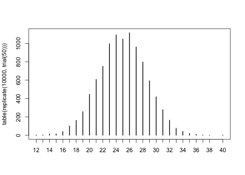

Repeating things: looping and the apply family
Previously we looked at how you can use functions to simplify your code. Ideally you have a function that performs a single operation, and now you want to use it many times to do the same operation on lots of different data. The naive way to do that would be something like this:
1 2 3 4 | |
But this isn’t very nice. Yes, by using a function, you have reduced a substantial amount of repetition. That is nice. But there is still repetition. Repeating yourself will cost you time, both now and later, and potentially introduce some nasty bugs. When it comes to repetition, well, just don’t.
The nice way of repeating elements of code is to use a loop of some sort. A loop is a coding structure that reruns the same bit of code over and over, but with only small fragments differing between runs. In R there is a whole family of looping functions, each with their own strengths.
The split–apply–combine pattern
First, it is good to recognise that most operations that involve looping are instances of the split-apply-combine strategy (this term and idea comes from the prolific Hadley Wickham, who coined the term in this paper). You start with a bunch of data. Then you then Split it up into many smaller datasets, Apply a function to each piece, and finally Combine the results back together.
Some data arrives already in its pieces - e.g. output files from from a leaf scanner or temperature machine. Your job is then to analyse each bit, and put them together into a larger data set.
Sometimes the combine phase means making a new data frame, other times it might mean something more abstract, like combining a bunch of plots in a report.
Either way, the challenge for you is to identify the pieces that remain the same between different runs of your function, then structure your analysis around that.
Why we’re not starting with for loops
Ok, you got me, we are starting with for loops. But not in the way you think.
When you mention looping, many people immediately reach for for. Perhaps
that’s because, like me, they are already familiar with these other languages,
like basic, python, perl, C, C++ or matlab. While for is definitely the most
flexible of the looping options, we suggest you avoid it wherever you can, for
the following two reasons:
- It is not very expressive, i.e. takes a lot of code to do what you want.
- It permits you to write horrible code, like this example from my earlier work:
1 2 3 4 5 6 7 8 9 10 11 12 13 14 15 16 17 18 19 20 21 22 23 24 25 26 27 | |
The main problems with this code are that
- it is hard to read
- all the variables are stored in the global scope, which is dangerous.
All it’s doing is making a plot! Compare that to something like this
1
| |
That’s much nicer! It’s obvious what the loop does, and no new variables are created. Of course, for the code to work, we need to define the function
1 2 3 | |
which actually makes our plot, but having all that detail off in a function has many benefits. Most of all it makes your code more reliable and easier to read. Of course you could do this easily with for loops too:
1 2 | |
but the temptation with for loops is often to cram a little extra
code in each iteration, rather than stepping back and thinking about
what you’re trying to achieve.
So our reason for avoiding for loops, and the similar functions
while and repeat, is that the other looping functions, like
lapply, demand that you write nicer code, so that’s we’ll focus on
first.
The apply family
There are several related function in R which allow you to apply some function to a series of objects (eg. vectors, matrices, dataframes or files). They include:
lapplysapplytapplyaggregatemapplyapply.
Each repeats a function or operation on a series of elements, but they
differ in the data types they accept and return. What they all in
common is that order of iteration is not important. This is
crucial. If each each iteration is independent, then you can cycle
through them in whatever order you like. Generally, we argue that you
should only use the generic looping functions for, while, and
repeat when the order or operations is important. Otherwise
reach for one of the apply tools.
lapply and sapply
lapply applies a function to each element of a list (or vector),
collecting results in a list. sapply does the same, but will try to
simplify the output if possible.
Lists are a very powerful and flexible data structure that few people seem to
know about. Moreover, they are the building block for other data structures,
like data.frame and matrix. To access elements of a list, you use the
double square bracket, for example X[[4]] returns the fourth element of the
list X. If you don’t know what a list is, we suggest you read more
about them, before you proceed.
Basic syntax
1
| |
Here X is a list or vector, containing the elements that form the input to the
function f. This code will also return a list, stored in result, with same
number of elements as X.
Usage
lapply is great for building analysis pipelines, where you want to repeat a series of steps on a large number of similar objects. The way to do this is to have a series of lapply statements, with the output of one providing the input to another:
1 2 | |
The challenge is to identify the parts of your analysis that stay the same and
those that differ for each call of the function. The trick to using lapply is
to recognise that only one item can differ between different function calls.
It is possible to pass in a bunch of additional arguments to your function, but
these must be the same for each call of your function. For example, let’s say we
have a function test which takes the path of a file, loads the data, and tests
it against some hypothesised value H0. We can run the function on the file
“myfile.csv” as follows.
1
| |
We could then run the test on a bunch of files using lapply:
1 2 | |
But notice, that in this example, the only this that differs between the runs is a single number in the file name. So we could save ourselves typing these by adding an extra step to generate the file names
1 2 | |
The nice things about that piece of code is that it would extend as long as we wanted, to 10000000 files, if needed.
Example - plotting temperature for many sites using open weather data
Let’s look at the weather in some eastern Australian cities over the last couple of days. The website openweathermap.com provides access to all sorts of neat data, lots of it essentially real time. We’ve parcelled up some on the nicercode website to use. In theory, this sort of analysis script could use the weather data directly, but we don’t want to hammer their website too badly. The code used to generate these files is here.
We want to look at the temperatures over the last few days for the cities
1
| |
The data are stored in a url scheme where the Sydney data is at http://nicercode.github.io/guides/repeating-things/data/Sydney.csv and so on.
The URLs that we need are therefore:
1 2 3 4 | |
1 2 3 4 | |
We can write a function to download a file if it does not exist:
1 2 3 4 5 6 | |
and then run that over the urls:
1 2 3 4 | |
Notice that we never specify the order of which file is downloaded in
which order; we just say “apply this function (download.maybe) to
this list of urls. We also pass the path argument to every function
call. So it was as if we’d written
1 2 3 4 | |
but much less boring, and scalable to more files.
The first column, time of each file is a string representing date
and time, which needs processing into R’s native time format (dealing
with times in R (or frankly, in any language) is a complete pain). In
a real case, there might be many steps involved in processing each
file. We can make a function like this:
1 2 3 4 5 | |
that reads in a file given a filename, and then apply that function to
each filename using lapply:
1 2 | |
We now have a list, where each element is a data.frame of
weather data:
1
| |
1 2 3 4 5 6 7 | |
We can use lapply or sapply to easy ask the same question to each
element of this list. For example, how many rows of data are there?
1
| |
1 2 | |
What is the hottest temperature recorded by city?
1
| |
1 2 | |
or, estimate the autocorrelation function for each set:
1
| |


1
| |

1
| |

I find that for loops can be easier to plot data, partly because there is nothing to collect (or combine) at each iteration.
1 2 3 4 5 6 7 | |

1 2 3 4 | |

1 2 3 4 5 6 7 8 9 10 11 | |
Parallelising your code
Another great feature of lapply is that is makes it really easy to parallelise your code. All computers now contain multiple CPUs, and these can all be put to work using the great multicore package.
1 2 3 4 | |
tapply and aggregate
In the case above, we had naturally “split” data; we had a vector of city names that led to a list of different data.frames of weather data. Sometimes the “split” operation depends on a factor. For example, you might have an experiment where you measured the size of plants at different levels of added fertiliser - you then want to know the mean height as a function of this treatment.
However, we’re actiually going to use some data on ratings of seinfeld episodes, taken from the [Internet movie Database] (http://www.reddit.com/r/dataisbeautiful/comments/1g7jw2/seinfeld_imdb_episode_ratings_oc/).
1 2 3 4 5 | |
Columns are Season (number), Episode (number), Title (of the episode), Rating (according to IMDb) and Votes (to construct the rating).
1
| |
1 2 3 4 5 6 7 | |
Make sure it’s sorted sensibly
1
| |
Biologically, this could be Site / Individual / ID / Mean size / Things measured.
Hypothesis: Seinfeld used to be funny, but got progressively less good as it became too mainstream. Or, does the mean episode rating per season decrease?
Now, we want to calculate the average rating per season:
1
| |
1
| |
1
| |
1
| |
and so on until:
1
| |
1
| |
As with most things, we could automate this with a for loop:
1 2 3 4 | |
That’s actually not that horrible to do. But we it could be nicer. We first split the ratings by season:
1 2 | |
1 2 3 4 5 6 7 8 9 10 11 12 13 14 15 16 17 18 19 20 21 | |
Then use sapply to loop over this list, computing the mean
1
| |
Then if we wanted to apply a different function (say, compute the per-season standard error) we could just do:
1 2 3 4 5 6 7 | |

But there’s still repetition there. Let’s abstract that away a bit.
Suppose we want a: 1. response variable (like Rating was) 2. grouping variable (like Season was) 3. function to apply to each level
This just writes out exactly what we had before
1 2 3 4 | |
We can compute the mean rating by season again:
1
| |
which is the same as what we got before:
1
| |
1
| |
Of course, we’re not the first people to try this. This is exactly
what the tapply function does (but with a few bells and whistles,
especially around missing values, factor levels, additional
arguments and multiple grouping factors at once).
1
| |
1 2 | |
So using tapply, you can do all the above manipulation in a
single line.
There are a couple of limitations of tapply.
The first is that getting the season out of tapply is quite
hard. We could do:
1
| |
1
| |
But that’s quite ugly, not least because it involves the conversion numeric -> string -> numeric.
Better could be to use
1
| |
1
| |
But that requires knowing what is going on inside of tapply (that
unique levels are sorted and data are returned in that order).
I suspect that this approach:
1 2 | |
1 2 | |
is probably the most fool-proof, but it’s certainly not pretty.
However, the returned format is extremely flexible. If you do:
The aggregate function provides a simplfied interface to tapply
that avoids this issue. It has two interfaces: the first is
similar to what we used before, but the grouping variable now must
be a list or data frame:
1
| |
1 2 3 4 5 6 7 8 9 10 | |
(note that dat["Season"] returns a one-column data frame). The
column ‘x’ is our response variable, Rating, grouped by season. We
can get its name included in the column names here by specifying
the first argument as a data.frame too:
1
| |
1 2 3 4 5 6 7 8 9 10 | |
The other interface is the formula interface, that will be familiar from fitting linear models:
1
| |
1 2 3 4 5 6 7 8 9 10 | |
This interface is really nice; we can get the number of votes here too.
1
| |
1 2 3 4 5 6 7 8 9 10 | |
If you have multiple grouping variables, you can write things like:
<div class=’bogus-wrapper’>aggregate(response ~ factor1 + factor2, dat, function)</pre></td></tr></table></div>
to apply a function to each pair of levels of factor1 and factor2.
replicate
This is great in Monte Carlo simulation situations. For example. Suppose that you flip a fair coin n times and count the number of heads:
1 2 | |
You can run the trial a bunch of times:
1
| |
1
| |
1
| |
1
| |
1
| |
1
| |
and get a feel for the results. If you want to replicate the trial 100 times and look at the distribution of results, you could do:
1
| |
1 2 3 | |
and then you could plot these:
1
| |

for loops
“for” loops shine where the output of one iteration depends on
the result of the previous iteration.
Suppose you wanted to model random walk. Every time step, with 50% probability move left or right.
Start at position 0
1
| |
Move left or right with probability p (0.5 = unbiased)
1
| |
Update the position
1
| |
Let’s abstract the update into a function:
1 2 | |
Repeat a bunch of times:
1 2 | |
To find out where we got to after 20 steps:
1 2 | |
If we want to collect where we’re up to at the same time:
1 2 3 4 5 6 | |

Pulling that into a function:
1 2 3 4 5 6 7 | |
We can then do 30 random walks:
1 2 | |

Of course, in this case, if we think in terms of vectors we can actually implement random walk using implicit vectorisation:
1 2 3 4 5 | |

Which reinforces one of the advantages of thinking in terms of functions: you can change the implementation detail without the rest of the program changing.